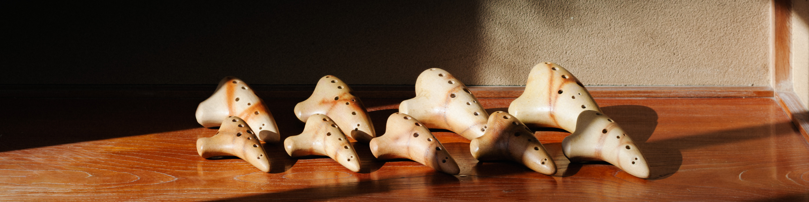

"A single-chamber ocarina has a limited range, so you can't play that many tunes on it. You shold get at leaste a 12-hole ocarina. An AC-tuned ocarina is a good choice to start with." Is that what you think? Is it really the best choice?
You can get the full 12-hole range with just 11 holes.
The modern form of the ocarina was established in Italy in 19th centry. The classic style a 10-hole with a range from C to F one octave higher. By combining C and G ocarinas in different pitches, Players can cover a wider range of notes in ensemble.
Later, in Japan during the 20th century, a 12-hole ocarina was introduced. Two additional subholes, normally left open, extend the range down to low B and low A when coverd. Today, this 12-hole design has become very popular around the world.

My ocarina omits one of the additional subholes, but its range extends up to high G. It's an 11-hole that can play from C to G one ovtave higher, as well as low B using an additional subhole.
This allows for smoother fingering, even when playing fast-tempo tunes. You can play high F, which is normally an open note on a conventional 12-hole ocarina, while keeping your left pinky on its hole. This makes it easier to switch between high E and F, and also allowing you to hold the ocarina more securely. Of cource, you can get high G by lifting all your fingers off the holes.
Double hole for ocarinas.
The right pinky hole features a double-hole design, just like the double holes found on recorders, allowing you to produce C#. This feature can be found on some European ocarinas, but it has rarely been adopted in Japanese ocarinas, because a subhole can serve the same porpose. On a common 12-hole C ocarina, you can produce the same C# by covering the right-hand subhole while leaving the right pinky hole open. This works fine for slow-tempo tunes. However, if you want to play fast, rhythmic passages, using a double hole for the right pinky makes fingering much easier and smoother.

Choose from a variety of keys to find the ones you really need.
Not only the keys like C, F and G, but also Ab, A, Bb, Eb ocarina are available. Enjoy the freedom of smaller, lighter single-chamber ocarina, without having to swich between chambers.
If you're interested in playing tunes traditionally performed on the Uilleann pipes or tin whistle on an ocatina, or in playing along with musicians who play these instruments, I'd love to hear from you! I'd be happy to make a custom D-tuned ocarina for you. it would be a single-chamber instrument with a range from D to high A, including a subhole for C#. Its design would also male easy to play fast, rhythmic tunes.
It all began with a performance by Carlos Núñez, the renowned Galician gaita player. Until then, I hadn't been perticularly interested in the ocarina much, but hearing his performance completely changed my perception of the instrument.
The ocarinas he plays are made by Manuel Barreiro, also known as “Paparolo”, a Spanish sculptor. I first got to know Paparolo around 2014, and over the years, he has taught me a great deal about the ocarina.
A blowing feel that offers more freedom in your performance.
Ocarinas are often described as instruments that anyone can play easily with a gentle breath. However, I believe that prioritizing ease of play too much can limit the range of breath control available to produce accurate pitches. And I have also questioned the common belief that high notes should be played with a strong, fast stream of air, while low notes require a softer, gentler breath.
What I love most about my teacher Paparolo's ocarinas is their remarkable flexibility. From the lowest notes to the highest, they allow the player considerable freedom in how they control their breath. Rather than dictating a single way to play each note, the instrument leaves room for the player's own choices and expression. This is the quality I most want to preserve and carry forward from Paparolo's ocarinas.
My ideal is to create an instrument that accommodates the player's expressive intentions. It should allow delicate high notes to be played with a free, flowing breath, while also responding to a firm, powerful breath when the player wants the low notes to resonate with strength.
Whistle-like windway
The windway exit is shaped much like that of a whistle. This design is something I inherited from Paparolo, and have further refined through my own experimentation. Getting the airflow and the edge just right is what takes the most time and care in making my ocarinas.
To accompany you for years to come.
They are durable and maintenable due to firing in higher temperture. The colors and textures are entirely created through glazing and firing, with no paints or coating applied. It can be treated just like tableware.

You can immerse it in water for cleaning, and warm it up on cold days.